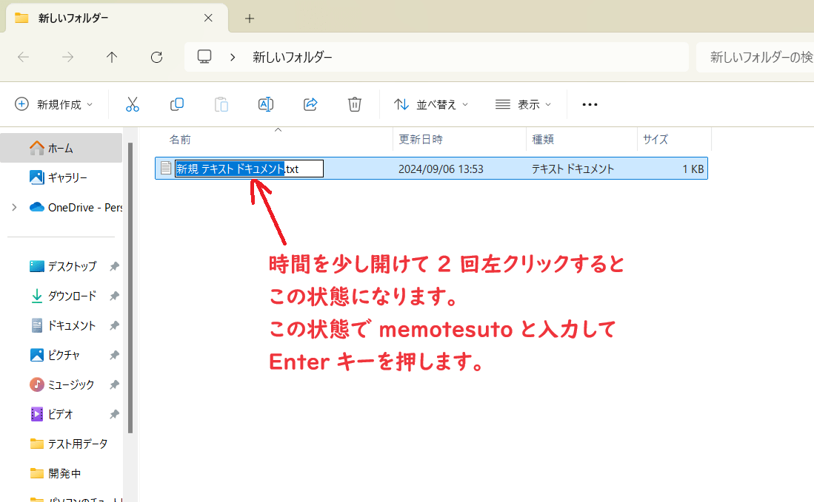

メモファイルの名前を「メモテスト」に変更しよう エクスプローラーの習得作業はこれで最後です。エクスプローラーでメモファイルを少し時間を空けて 2 回左クリックしてファイル名が青枠になったらキーボードで memotesuto と入力して、キーボードの Enter を押して下さい。ローマ字になった場合はキーボードの BackSpace で入力した文字を削除してキーボードの 半角/全角 ボタンを押してから再度試して下さい。 
<< 前へ
次へ >>